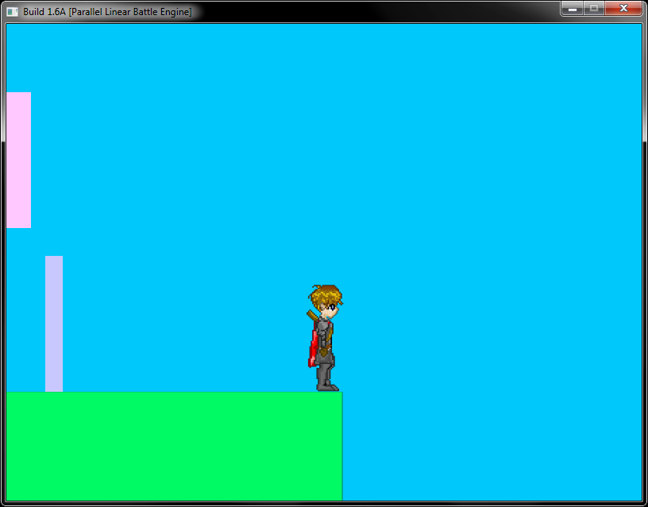

Projects
Here is the list of projects that I started and I had worked on. Some of it are discontinued but I still planned to continue it on the future. Here's a quick table of the projects currently listed on this site. Just click on the name to automatically be redirected to the section of this page you want to go to.
| Name | Type |
|---|---|
| Dragon Slayer | Game |
| Robo-JS | Game |
| s2sc.js | Tool |
| Zero Engine | Engine |
| [Proof of Concept] HTML5 2D Canvas Racing Game | Engine |
Select a title
Click or tap on any title above and see what the project is all about.
Dragon Slayer (Text Based Game)

A solo-project of mine that I've developed as my final project on my CS120 (Introduction to Programming) class that aims to recreate the old rpg feel that games like Ultima had provide.
Status: Dropped
Robo.js (Github Link)
This game is made as a direct inspiration from an activity from my master's class in theory of programming languages. In the activity, we where tasked to create a script base on the specified op-codes of the robot.
The idea is to game-ify this activity by adding levels and extra functionalities that the original script did not have.
Status: Hiatus
s2sc.js (Github Link)

A javascript code convertion framework that aims to connect other programming languages to web browsers by interpreting codes from a programming language then converting it to another programming language.
Status: Hiatus
Zero Engine
A 2d game engine that aims to make developing a 2d game easier by doing templates and drag and drop functionality
Status: Hiatus (Planning to do an HTML5 Rewrite)
[Proof of Concept] HTML 2D Canvas racing game (Github Link) (Demo page)

A racing game created using raw 2d canvas without utilizing any libraries or browser plugins. The goal of the project is to determine the feasibility of the 2d canvas that HTML5 provides. The result was that although it is possible to create a game out of it, it is too slow enough to be considered a viable at this point in time even though most browsers do provide some level of acceleration on 2d canvas.
Status: Completed